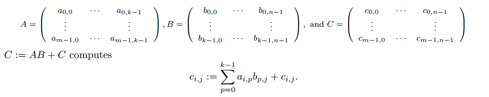
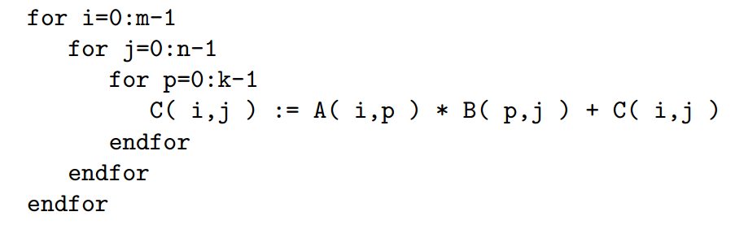
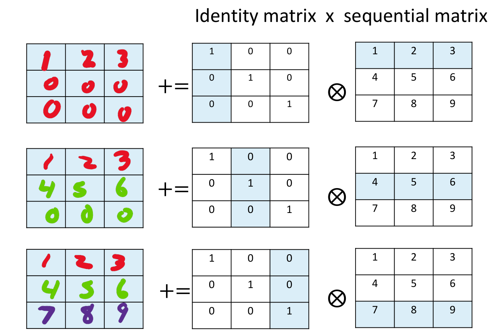
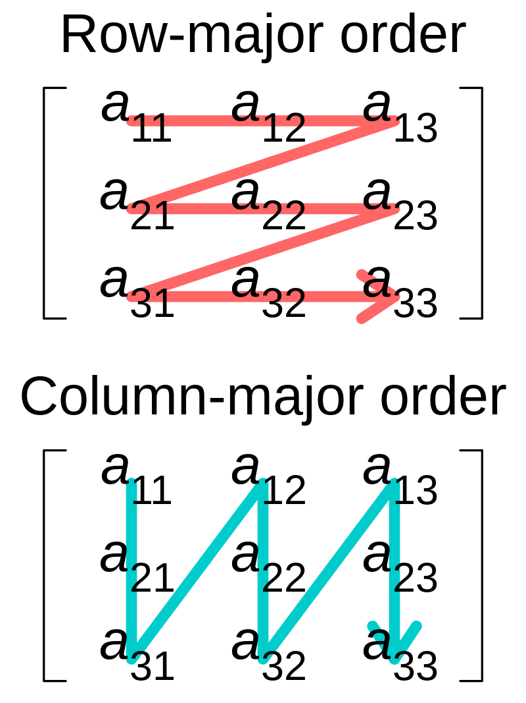
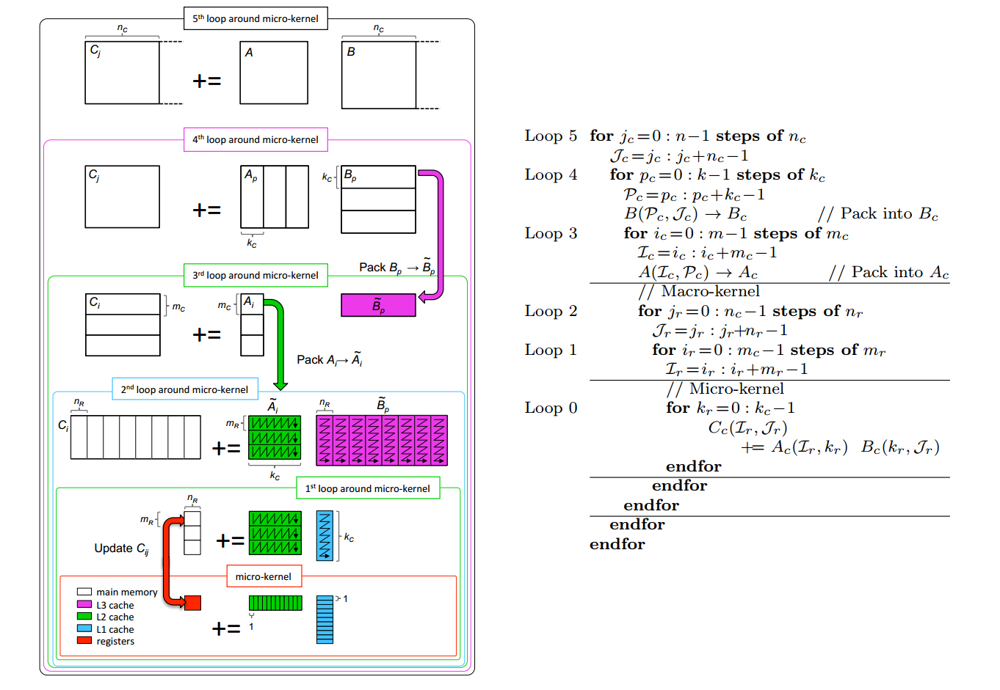
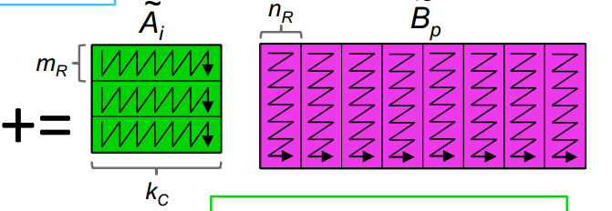
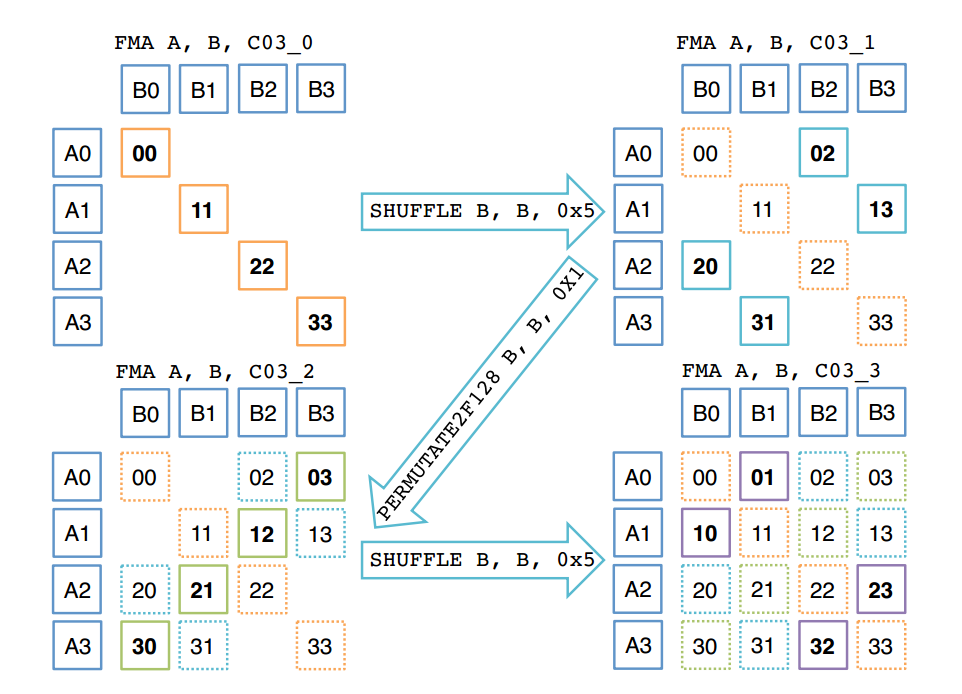

基础线性代数子程序(BLAS)
BLAS包含一系列线性代数基础操作的接口集合，在此基础上构建更加高级的线性代数库如LAPACK、Eigen等。这样设计的目的是对于不同的硬件平台做到最大程度的底层性能优化，从而使所有调用BLAS的线性代数库都能从中受益。不同硬件的BLAS通常由硬件供应商团队使用汇编代码实现，从而能够最大化利用硬件架构的性能。
Note：Eigen库并不完全遵循BLAS标准，默认情况下使用其自行优化的矩阵以及向量操作，但对于某些操作(如稠密矩阵分解等)，可以在编译时进行配置从而调用BLAS相关方法
BLAS接口分为三个集合：
Level-1 BLAS (vector-vector)
Level-2 BLAS (matrix-vector)
Level-3 BLAS (matrix-matrix)
本文章中讨论的GEMM(Matrix Multiplication)就属于Level-3操作集合。
矩阵乘法(GEMM)
本文章将围绕优化GEMM在多级缓存cpu上的优化进行讨论，其中涉及到的存储层级迁移以及核优化的思想也是BLAS的Level-3集合优化的基本思路之一，通过充分理解GEMM的优化思路能够帮助我们更好的学习BLAS其他操作的优化。
GEMM的优化思路其实用一句话就能概括：在$O(n^2)$的数据上，我们进行了$O(n^3)$的计算，我们希望能将数据在不同存储结构之间移动(内存，缓存，寄存器)的成本均摊到这些计算上，从而提高整体的效率。
GEMM本身包括多个操作，如转置相乘，常数项系数等等，为了便于说明，我们在这里采用一个简化的版本：
$C:= AB+C$
其中C的大小为mxn,A为mxk,B为kxn。我们在这里讨论矩阵为列存储的情况。
矩阵乘法：
 我们考虑最简单的做法，对于$C_{ij}$我们计算对应的$A_{ik}$以及$B_{kj}$相乘求和，通过伪代码表示： 事实上，这三层循环的顺序可以任意调换，最后都会获得正确的结果。我们考虑将k放置在最外层的情况，我们由此能够获得一个叫做外积的操作
 每次通过一个mx1和1xn向量运算，来获得一个mxn的矩阵，通过叠加这k个矩阵，来获得最后的结果。这一步操作并没有减少计算量，只是用另一种方式去理解矩阵乘法的过程。相对应的，k在最内层循环的情况我们成为**内积**这里的外积和内积的概念与向量有所区别，注意区分
行存储与列存储：
矩阵通常被表示为一个二维数组，而在内存中，我们以序列的方式存储这种二维数组。所谓行存储与列存储指的是我们将矩阵数据在内存中的排列顺序：
在使用不同的计算方式的时候，由于缓存在时间与空间上的局部性质，行存储和列存储会带来不同的cache miss，从而大幅影响最终的计算效率。在之后我们会使用一种名叫packing的技巧，通过重新排列矩阵中的数据，来降低cache miss。
Blocking
现代的分级缓存结构使我们需要更加注意数据在不同存储结构之间的移动，我们希望被频繁访问的数据存储在更快的存储空间中，一次移动尽可能多的数据，并且之后的计算都围绕这些数据进行。基于这种目的出现的方法几位Blocking(分块)，即我们将整体的计算分成不同的“块”，只要能够优化每个块中的计算，就能够获得一个高效的算法。

在切换不同block的时候进行存储空间上的移动，而在每个block上尽可能的优化计算效率，这种思想既能方便我们设计优化算法，也能比较好的适应现代cpu的存储架构。
Goto方法优化GEMM
我们考虑单核，三层cache(L1,L2,L3)架构下该方法的实现。在BLIS框架下，我们只需要将最终的micro-kernel结合硬件进行高程度的优化。在原先的GotoBLAS实现中则(现名为OpenBLAS)，对于micro-kernel外的第二层循环进行优化。
 goto-alg.png我们首先以$n_c$为在行方向上划分$C$和$B$，即$C_j = AB_j$,然后对于每一个$n_c$块再对$A$从列方向上划分，$B_j$从行方向去划分，以$k_c$为单位。接下来的操作事实上都比较类似，在实现上就是几层相似的循环，但是我们需要注意的是为什么要进行这种划分。从图中可以看到，$\widetilde{B}_p$被放在了L3缓存，$\widetilde{A}_i$被放在了L2缓存，最终$B$的micro-kernel被放在了L1缓存。

最终micro-kernel在L1缓存和register之间实现优化的计算，从micro-kernel那一层我们能够看到，计算的是矩阵外积。之所以要将$B$的micro-kernel部分放在L1缓存，是因为在外积计算中我们会反复用到B的一行中相同的元素，而A中我们每次从L2中取出一个元素存储在寄存器中，进行向量化的计算。这样，我们能够尽可能利用多层的缓存结构，并在每次数据迁移后进行尽可能多的计算，从而均摊这种数据移动的成本。用更通俗的语言来说的话，就是减少cache-miss，让我们的数据尽可能减少在存储层之间的移动而专注于结果的计算。
在上述过程中使用的一个技术叫做packing, 即我们提前将最后micro-kernel需要计算的数据按照访问的顺序一次排列好，这样在最后计算时能够一次性载入缓存以及寄存器，在降低cache-miss的同时，也方便我们进行micro-kernel的优化操作之一，vectorization(向量化)。
按照图中的箭头方向，我们每次从$\widetilde{A}_i$中截取$m_R$长度的数据，存储进入一片预先分配好的存储空间，然后按照箭头方向一次顺序存储，对于$\widetilde{B}_p$进行类似的操作，这样我们能够一次性读出$m_R$以及$n_R$长度的向量，进行外积的计算。并且顺应micro-kernel计算的顺序，在一次内存访问中连续的一篇存储空间都被读入缓存中，从而降低cache miss。
Micro-kernel优化
通过上面的部分我们知道，最终需要计算的其实是一个外积。按照传统方法我们每次只能读取一个数据然后按顺序进行加乘运算，但是现代的cpu硬件针对连续的多维度数据构建了特殊的支持，即对数据进行“向量化”的操作。通过将连续的数据载入向量寄存器进行计算，这实际上涉及很多的计算指令，我们不在此展开，因为不同硬件有不同的支持方式，我们只需要知道这是一种名为SIMD(Single Instruction/Multiple Data)的设计理念，能够将连续多个数据打包，按照向量的方式进行运算即可，也就是我们之前提到的vectorization。到这里我们也能够理解进行packing操作的原因之一，方便我们直接利用SIMD指令读取连续地址数据进行向量化操作。在这里我们介绍两种向量化进行外积的操作。
broadcast:

我们每次从$B$的micro-kernel中取出一个元素，在$A$上进行”广播”，即进行相同的操作，过程中我们将$A$的元素存储在向量寄存器中，每次在L1上访问$B$的元素，进行计算。具体实现上通常是将$B$的元素扩展成和A同维度的向量再进行计算，最后将结果写入C的对应位置。
butterfly:
broadcast需要我们多次的访问B中的元素，而butterfly方法则设计了一种能够将$A$和$B$都一次行读入寄存器进行计算的方法，过程中通过交换$B$的元素来计算$C$不同位置的结果，最后将4个存储结果的寄存器中数据通过predicate register以及位运算来写入$C$中。这种方法看起来更加巧妙一些，并且也确实规避了多次访问B内存地址的限制，但是实际实验中的效果不一定会比broadcast更好，这取决于硬件的寄存器数量以及对于SIMD指令集中部分指令如向量左/右移操作的优化程度。并且，在加入并行的方法进行加速时，broadcast明显比butterfly更加适配。
参数调整
在上述方法中$m_R$,$n_R$,以及$k_C$是我们人工指定的参数，这些参数甚至能够影响最终性能30%-40%，因为其决定的micro-kernel大小决定了我们能够在高速存储空间中存放的数据数量。明显，我们如过能够将尽可能多的数据放在高速缓存中，就能够获得更高的性能，但是硬件的大小总是受到限制的，而数据往往不是，所以我们需要慎重的选择这些参数，根据不同的L1,L2,L3大小以及寄存器数量来最大程度的利用硬件的性能，同时也不能超过硬件限制，造成大量的cache miss。当然现在也有一些自动化的方法来动态调节这些参数，在此不做详细描述。